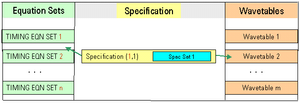

Single-port timing setup
When you define an equation-based timing setup for a single-port test, you go through the steps of defining equation sets and related timing sets, wavetables, and creating specifications.
The following figure shows the structure of a single-port timing setup.

A specification is characterized by a pair of integers:
- The first integer represents the set number of the associated timing equation set.
- The second integer counts specifications associated with the same timing equation set.
If different spec values (defined in a different spec set) are needed or another wavetable needs to be combined with the same equation set, a new specification is required.
Comparison to multiport timing setup
The concept of multiport timing extends the concept of a single-port timing setup. With regard to syntax (equation sets, waveform sets), there are almost no differences between a single-port and multiport timing setup.
Functional changes
- Introduced before SmarTest 6.3.2